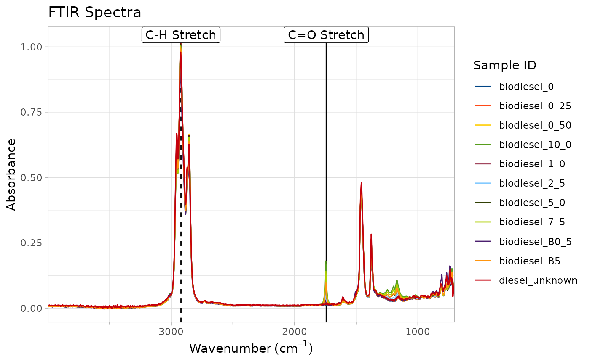

Add a vertical line marker, at a given wavenumber, to an FTIR plot, and label at the top of the plot with a provided text (or by default the wavenumber of the marker). This is useful for noting important wavenumbers.
This function can be called repeatedly. Note that older labels will be covered by newer labels if they overlap.
Ajoutez un marqueur de ligne verticale, à un nombre d'ondes donné, à un tracé FTIR, et l'étiquette en haut du tracé avec un texte fourni (ou par défaut le nombre d'ondes du marqueur). Cette fonction est utile pour noter les nombres d'ondes importants. Cette fonction peut être appelée plusieurs fois.
Notez que les vieux labels seront couverts par les nouveaux s'ils se chevauchent.
add_wavenumber_marker(
ftir_spectra_plot,
wavenumber,
text = NULL,
line_aesthetics = NULL,
label_aesthetics = NULL
)A plot generated by [plot_ftir()] or [plot_ftir_stacked()]. Un tracé généré par [plot_ftir()] ou [plot_ftir_stacked()].
the wavenumber at which the marker should be placed.
le nombre d'ondes auquel le marqueur doit être placé.
The text of the label over the marker (optional). If no text is provided, the label will show the wavenumber (rounded to the nearest whole number).
Le texte de l'étiquette au-dessus du marqueur (facultatif). Si aucun texte n'est fourni, l'étiquette indiquera le nombre d'ondes (arrondi au nombre entier le plus proche).
A named list of aesthetics to pass to ggplot for
creating the vertical line. See [ggplot2::geom_path()]'s aesthetics
section for more info. Specifically, alpha, colo(u)r, linetype and
linewidth are permitted. Positioning aesthetics will be removed.
Une list nommée d'esthétiques à transmettre à ggplot pour créer la ligne
verticale. Voir la section esthétique de [ggplot2::geom_path()] pour plus
d'informations. Plus précisément, alpha, colo(u)r, linetype et
`linewidth“ sont autorisés. Les aspects esthétiques du positionnement
seront supprimés.
A named `list` of aesthetics to pass to ggplot for creating the label. See `[ggplot2::geom_text()]`'s aesthetics section for more info. Specifically, `alpha`, `colo(u)r`, `family`, `fill`, `fontface` and `size`are permitted. Positioning aesthetics will be removed.
Une `list` nommée d'esthétiques à transmettre à ggplot pour créer l'étiquette. Voir la section esthétique de `[ggplot2::geom_text()]` pour plus d'informations. Plus précisément, `alpha`, `colo(u)r`, `family`, `fill`, `fontface` et `size` sont autorisés. Les aspects esthétiques du positionnement seront supprimés.
the FTIR plot as a ggplot2 object, with a marker added at the specified wavenumber.
le tracé IRTF en tant qu'objet ggplot2, avec un marqueur ajouté au nombre d'ondes spécifié.
See vignette("ggplot2-specs") for more information on setting
aesthetics.
Voir vignette("ggplot2-specs") pour plus d'informations sur la définition
de l'esthétique.
if (requireNamespace("ggplot2", quietly = TRUE)) {
# Generate a plot
biodiesel_plot <- plot_ftir(biodiesel)
# Add a marker at 1742 cm^-1 for the carbonyl C=O Stretch
p <- add_wavenumber_marker(biodiesel_plot, 1742, text = "C=O Stretch")
p
# Add a second marker and use a dashed line for the C-H aliphatic stretch
add_wavenumber_marker(p, 2920,
text = "C-H Stretch",
line_aesthetics = list("linetype" = "dashed")
)
}
